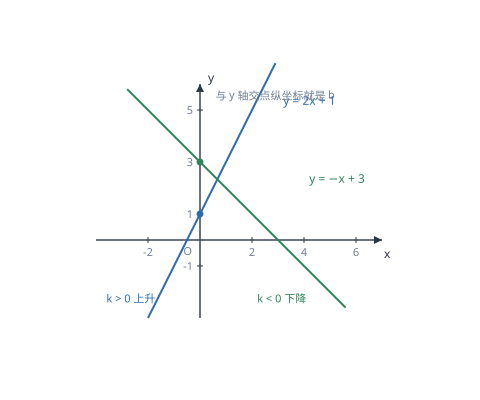

一次函数的图象与性质
一次函数 y=kx+b 的图象是一条直线：k 定方向与陡缓，b 定与 y 轴的交点；两点就能确定它。
| 所属主题 | 函数 |
|---|---|
| 所属模块 | 代数 |
| 课标学段 | 第四学段（7~9 年级） |
| 前置知识 | 平面直角坐标系与函数、函数的表示 |
| 核心素养 | 几何直观运算能力模型观念 |
教材定位
人民教育出版社《人教版（2024版）义务教育教科书·数学》
八年级下册第23章 一次函数23.1 一次函数的概念23.2 一次函数的图象和性质
对应八下 23.1 与 23.2：概念在 23.1，k、b 的几何意义与增减性在 23.2。
说明
形如 y=kx+b（k、b 是常数，k≠ 0）的函数叫一次函数；当 b=0 时，y=kx 叫正比例函数，它是特殊的一次函数，图象过原点。一次函数的图象是一条直线，所以画图只需确定两个点，通常取与两条坐标轴的交点：令 x=0 得 (0,b)，令 y=0 得 ≤ft(-b/k,0)。
k 与 b 各自管一件事。k 叫斜率，决定直线的方向与陡缓：k>0 时 y 随 x 增大而增大，直线从左下往右上；k<0 时 y 随 x 增大而减小，直线从左上往右下；|k| 越大，直线越陡。b 叫截距，决定直线与 y 轴交点的纵坐标，b>0 交在 y 轴正半轴，b<0 交在负半轴，b=0 过原点。
使用场景
当题目给出两个点的坐标、或给出「x 等于某值时 y 等于某值」的两组对应数据时，用待定系数法求解析式。这类题的标准问法是「求 y 与 x 之间的函数关系式」，答案必须写成 y=kx+b 的形式并注明 k≠ 0。
当题目给出图象、要求比较函数值大小或判断增减性时，直接看直线的走向。k>0 时，横坐标越大纵坐标越大；k<0 时反过来。比较两个点对应的函数值，先看 k 的符号，再看两点的横坐标大小，不必代入计算。
注意点
设解析式时不要漏掉 b。许多同学看到「正比例」就写 y=kx，但题目若没有明确说「成正比例」，就必须设 y=kx+b，否则会算出错误结果。判断依据是题目给的对应点是否包含 (0,0)：过原点才能设 y=kx。
k≠ 0 是定义的一部分。若算出 k=0，说明设的模型不成立，此时 y=b 是一条水平直线，不是一次函数。含参题里常出现「函数是一次函数，求参数」，答案要同时满足「x 的次数为 1」与「系数不为零」两个条件。
证明

图 1：k 的正负决定直线上升还是下降，b 决定直线与 y 轴交在哪里
证明
结论 1一次函数的图象是一条直线。
图象为什么是直线：一次函数表示「x 每增加 1，y 就增加 k」——增量是固定的，与 x 现在是多少无关。这种「均匀变化」在图上表现为：横坐标每走一格，纵坐标就抬高（或降低）相同的高度，点的轨迹必然是一条笔直的线。若增量随位置改变，图象就会弯曲，那是二次函数或反比例函数（这两类后面会学到）。
关键一步依据是「横坐标等距变化、纵坐标也等距变化」这一判据：两个方向都以固定步长同步变化，点就落在一条直线上；反之若增量随位置改变，同一段水平距离对应的高矮不同，轨迹必然弯曲。
结论 2k 决定直线的陡缓程度：|k| 越大越陡，k 的正负决定往上还是往下。
k 为什么决定陡缓：k 就是「横向走 1 格时纵向走几格」，即直线的倾斜程度。k=3 表示横走 1 格纵走 3 格，很陡；k=0.5 表示横走 2 格才纵走 1 格，很平。所以 |k| 越大越陡，k 的正负则决定往上还是往下。
关键一步依据是 k 的含义「横向走 1 格时纵向走几格」：这个比值就是倾斜程度，比值的绝对值给出陡缓，符号给出方向。所以 k 一变，直线的陡缓与走向就都变了。
结论 3b 决定直线在 y 轴上的位置：直线必过 (0,b)，但不影响倾斜程度。
b 的作用：令 x=0，代入 y=kx+b 得 y=b，所以直线必过 (0,b)。b 只决定这条直线「挂在 y 轴的哪个高度」，不改变它的倾斜程度。把 y=2x 向上平移 1 格就得到 y=2x+1，两条直线平行，正是因为 k 没变。
关键一步依据是令 x=0 代入得 y=b，即纵截距为 b；而平移只改变位置不改变方向，y=2x 平移后 k 仍是 2，所以两条直线平行。这说明 k 管方向、b 管位置，两者分工不同。
结论 4两个点可以确定一条直线，这就是待定系数法的依据。
为什么两点就能定一条直线：直线的方向由 k 决定，位置由 b 决定，共两个未知量；每给一个点就得到一个方程，两个点给出两个方程，正好解出 k 与 b。这就是待定系数法的依据——不是技巧，而是「两个未知数需要两个条件」。
关键一步依据是「两个未知数需要两个条件」：直线由 k、b 两个参数唯一确定，每代入一个已知点就得到一个关于 k、b 的方程，两个点即两个方程，可以唯一解出这两个参数。
结论 5过 (x_1,y_1) 与 (x_2,y_2) 的直线的斜率是 k=\dfracy_2-y_1x_2-x_1。
顺带得到斜率的计算公式：若直线过 (x_1,y_1) 与 (x_2,y_2)，则 k=\dfracy_2-y_1x_2-x_1。它表示「纵坐标的变化量除以横坐标的变化量」，与「横走一格纵走 k 格」是同一句话。
关键一步依据是 k 的定义「横走 1 格纵走 k 格」在任意两点间的推广：取这两点，纵向变化量与横向变化量之比与「横走一格纵走 k 格」是同一个比，所以这个比值就是斜率。
动手实验
取 y=2x+1 列表：x=-2,-1,0,1,2 时 y=-3,-1,1,3,5。在坐标纸上描出这五个点，会发现它们正好排在一条直线上；用直尺一靠，五点共线。再取 y=-x+3 列表描点，同样共线但方向相反。两个实验合起来说明：一次函数的点集是直线，k 的符号决定它的走向。
解题思路
待定系数法求解析式走四步：设 y=kx+b（若已知过原点则设 y=kx）；把两个已知点的坐标分别代入，得到关于 k、b 的二元一次方程组；解方程组求出 k、b；把 k、b 写回解析式，并注明 k≠ 0。写完代入另一个已知点（若有）核对。
判断增减性与比较大小，看 k 的符号即可：k>0 时 y 随 x 增大而增大，所以横坐标大的点函数值也大；k<0 时相反。若要用图象解释，就说「直线从左下往右上（或从左上往右下）」。这类题不需要代入计算，代入反而慢且容易算错。
画图时取两个特殊点最省事：(0,b) 与 ≤ft(-b/k,0)，即与两轴的交点。若 b=0，则取 (0,0) 与 (1,k)。画完检查：直线是否穿过这两点、k>0 时是否从左下到右上——两个检查都通过，图就没错。
按场景的例题
例 1（场景：物理情境） 弹簧长度与所挂重物
一根弹簧原长 10 厘米，每挂 1 千克重物就伸长 0.5 厘米（在弹性限度内）。写出弹簧长度 y（厘米）与所挂质量 x（千克）的函数关系式，并求挂 4 千克时的长度。
解：不挂重物时长度为 10，即 x=0 时 y=10，所以 b=10；每增加 1 千克伸长 0.5 厘米，所以 k=0.5。解析式为 y=0.5x+10（x≥ 0）。当 x=4 时，y=0.5× 4+10=12 厘米。检验：伸长量 0.5× 4=2 厘米，原长 10 厘米，共 12 厘米，符合。
答：y=0.5x+10；挂 4 千克时弹簧长 12 厘米。
例 2（场景：数据调查） 由两组数据求一次函数解析式
已知 y 是 x 的一次函数，当 x=1 时 y=5，当 x=3 时 y=11。求这个一次函数的解析式。
解：设 y=kx+b，代入两组数据：\begincasesk+b=5\\ 3k+b=11\endcases。两式相减得 2k=6，k=3；回代得 b=2。所以 y=3x+2。检验：x=1 时 y=5，x=3 时 y=11，都与题给一致；也可用斜率公式核对 k=11-5/3-1=3。
答：y=3x+2。
例 3（场景：行程与速度） 匀速行驶的路程与时间
一辆汽车以 60 千米/时的速度匀速行驶，行驶时间为 t 小时，路程为 s 千米。写出 s 与 t 的关系式；2.5 小时行驶多少千米？s 随 t 如何变化？
解：路程等于速度乘时间，s=60t（t≥ 0）。这是正比例函数，k=60>0，图象是过原点、从左下往右上的直线。当 t=2.5 时，s=60× 2.5=150 千米。因为 k>0，所以 s 随 t 增大而增大，且 t 每增加 1 小时，s 增加 60 千米——这个「每增加 1 单位增加 k」正是 k 的实际含义。
答：s=60t；2.5 小时行驶 150 千米；s 随 t 增大而增大。
常用推论
由两点求斜率的公式 k=\dfracy_2-y_1x_2-x_1 可以直接判断 k 的符号：分子分母同号则 k>0，异号则 k<0。这样在不解方程的情况下也能说出直线的走向。
两条直线 y=k_1x+b_1 与 y=k_2x+b_2：k_1=k_2 且 b_1≠ b_2 时互相平行（无交点）；k_1=k_2 且 b_1=b_2 时重合；k_1≠ k_2 时相交于唯一一点。这个结论把「两条直线的位置关系」变成了「比较两个系数」，是后续方程组解的情况的图象版本。
把直线 y=kx+b 向上平移 m 个单位得 y=kx+b+m，向下平移 m 个单位得 y=kx+b-m，向左平移 m 个单位得 y=k(x+m)+b，向右平移得 y=k(x-m)+b。规律是「上下平移改常数项，左右平移改 x」，且左加右减、上加下减。
易错点
错已知一次函数过 (1,3) 与 (2,5)，设 y=kx，解得 k=3，写成 y=3x。
为什么错题目说的是「一次函数」而不是「正比例函数」，必须设 y=kx+b。用 y=kx 等于额外假设了 b=0，而这个假设没有依据。
正确设 y=kx+b，代入两点解得 k=2、b=1，解析式为 y=2x+1。检验：x=1 时 y=3，x=2 时 y=5，都符合。
错认为 k<0 时，x 越大 y 越大。
为什么错把增减方向记反了。k<0 表示 x 每增加 1、y 减少 |k|，所以 x 越大 y 越小，图象从左上往右下。
正确k<0 时 y 随 x 增大而减小。可用 y=-x+3 验证：x=1 时 y=2，x=2 时 y=1，确实在减小。
错代入点坐标时把 (2,5) 代成 2x+5，即把横坐标当成 y、纵坐标当成 x。
为什么错点的坐标写作 (x,y)，代入时应把前一个数给 x、后一个数给 y。顺序颠倒会得到完全错误的方程。
正确把 x=2、y=5 代入 y=kx+b，得 5=2k+b。养成「先读横坐标再读纵坐标」的习惯，可以避免这类错误。
直观理解
把一次函数想成一段笔直的坡道：k 是坡度，k 越大坡越陡、k 为负则是下坡；b 是这段坡道在 y 轴上的「起点高度」。同样的坡度，起点高一点，整段路就整体上移，但陡缓完全不变——这就是「k 相同则平行」的直观含义。而两点确定一条直线，等于说：只要知道坡道上任意两处的高度，坡度和起点高度就都定下来了。